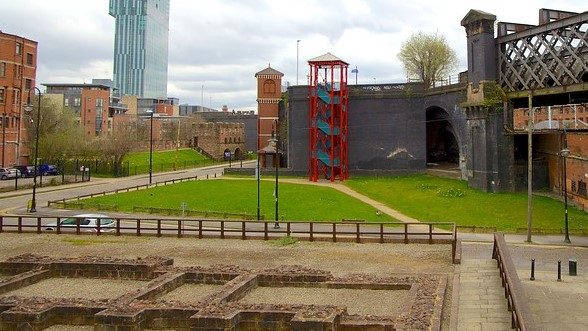
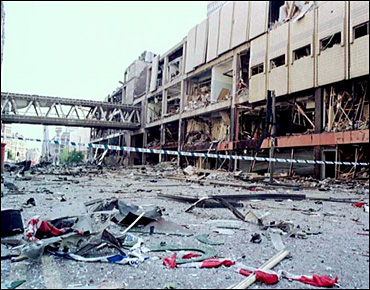
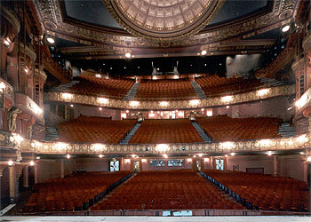
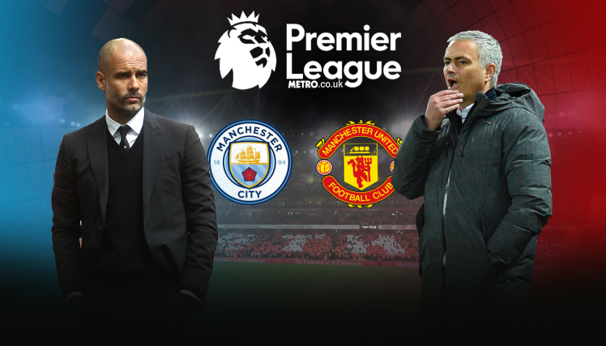
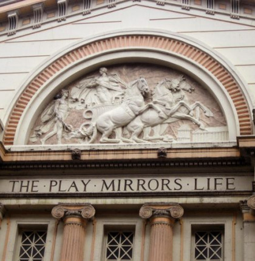
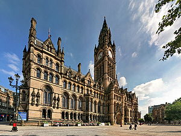
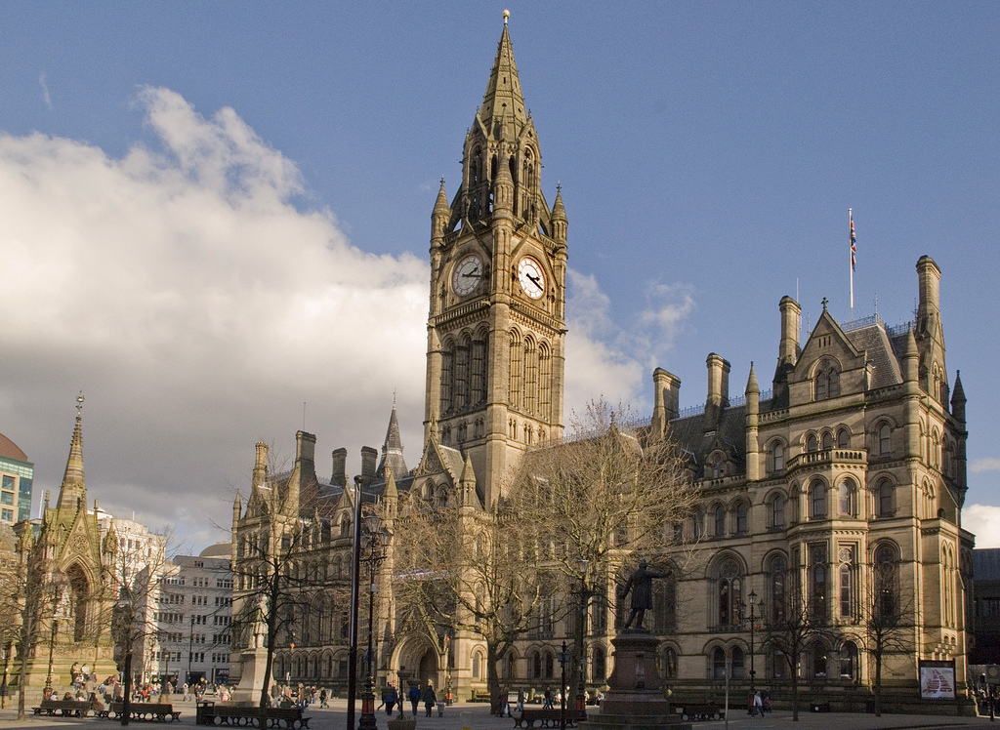
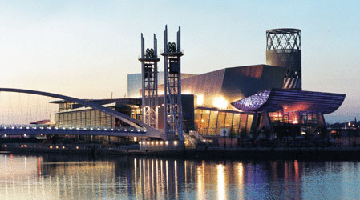

Geschiedenis
De oudste sporen van het ontstaan van Manchester gaan terug tot de eerste eeuw voor Christus. De Romeinen bouwden een versterking op de oostelijke oever van de Irwell rivier, genaamd Mancunium. Dit fort werd verschillende keren afgebroken en herbouwd en de laatste overblijfselen zijn vandaag nog te zien in het district Castlefield.
De laatste jaren van de 20ste eeuw hebben een belangrijke invloed gehad op het hedendaagse Manchester. In 1996 vernietigde een bom van het IRA een groot deel van het stadscentrum waarbij gelukkig geen doden, maar wel 200 gewonden vielen. Heel wat gebouwen uit de jaren '60 werden vernield of beschadigd. Het stadsbeeld is er ingrijpend door veranderd en dankzij internationale hulp werd de stad heropgebouwd tot het nieuwe en moderne centrum van vandaag.
Cultuur
Manchester is een stad waar cultuur hoog in de vaandel wordt gedragen. Er worden tal van tentoonstellingen georganiseerd en ook heel wat concerten, opera's en theatervoorstellingen op wereldniveau staan hier op het programma.
Wanneer je van voetbal houdt en in Manchester bent moet je zeker een kijkje nemen bij Manchester United en Manchester City. Beide clubs bieden tours aan waarin je de geschiedenis van de clubs kunt ontdekken en hun betekenis voor de stad.
Bezienswaardigheden
Opera House Manchester
Dit gebouw werd voor het eerst voor het publiek opengesteld in 1912 op Boxing Day (2de Kerstdag). Toen heette het nog "New Theatre" en sindsdien is het een publiekstrekker waar grote theaterproducties, opera en dansvoorstellingen doorgaan. Eind de jaren '70 werd het gebouw wegens een dalende publieke belangstelling gesloten, maar heel wat petities zorgden ervoor dat het Opera House uiteindelijk terug openging. Vandaag gaan in dit oude, elegante gebouw dankzij een sterk commercieel beleid een aantal van de meest succesvolle voorstellingen van Manchester door en u waant zich eventjes in een ander tijdperk wanneer u het gebouw betreedt.
Albert Square
Dit plein is het mooiste en belangrijkste plein van Manchester. Het meest indrukwekkende gebouw aan dit plein is de Manchester Town Hall. De andere aanwezige gebouwen lijken daarbij erg klein. Verder zijn er op het plein een aantal monumenten en standbeelden te vinden, waaronder die voor Prins Albert waar ook het plein naar is vernoemd. Het vierkante fontein werd voor diens vrouw, koningin Victoria geplaatst. Het plein is tussen 1863 en 1867 aangelegd.
Town Hall
Een aantal lokale overheidsdiensten zijn samengebracht in het in Victoriaanse stijl gebouwde stadhuis. Het gebouw is ontworpen door Alfred Waterhouse, die tevens het Manchester Museum en Manchester Assisen Courts op zijn naam heeft staan. De Town Hall werd in het jaar 1877 voltooid. Zeer indrukwekkende muurschilderingen sieren de binnenkant van dit prachtige oude stadhuis.
The Lowry
Tijdens een bezoek aan Manchester zal waarschijnlijk niemand dit gebouw passeren zonder zich af te vragen wat het is. Het ligt op een prachtige locatie aan het water. Dit stukje hoogstaand architectonisch bouwwerk is ontworpen door Michael Wilford. Het voornamelijk uit glas en staal bestaande gebouw huisvest twee theaters, een studio, 2000 m² tentoonstellingsruimte en een kunstgalerij.
Aanraders
Wanneer je opzoek bent naar een iets meer luxieus hotel dichtbij het stadscentrum dan is "Le Ville Hotel" zeker iets voor jou. Dit hotel ligt in het hart van het stadscentrum van Manchester
Wandel rond in de straten van de gay scene van Manchester. Deze gezellige buurt vol barretjes en restaurants grenst aan Chinatown. Manchester’s chinatown is na Londen de grootste van Engeland. Zeker de moeite waard!
Op zoek naar een leuke pub in Manchester? Dan is The Blue Pig in Northern Quarter een aanrader. Zoals in (bijna) iedere Engelse pub kun je naast een ruime keuze in bier, ook de nodige cocktails op de kaart vinden. In de weekenden zorgen DJ’s voor een gezellige sfeer.